Neet found the bazaar before Heather did. His nose went left, his ears went right, and the rest of him tried to follow both.
The day after Uttarayan, Heather had decided it was time for Neet and Buddy to experience the bustling bazaars of Gujarat. The narrow lanes were packed with vibrant stalls selling everything from spices to handcrafted jewelry. Heather held both leashes, keeping Buddy close while Neet trotted a little ahead, his Dorito-shaped ears perked up with curiosity.
“Look at all this stuff, Buddy! I bet we’ll find treasure here!”
Buddy kept close to Heather’s shopping bag. “I think I’d rather find a quiet corner,” he muttered, eyeing a cart piled high with colorful textiles. A loose end lifted in the breeze. Buddy ducked. The cloth settled, having achieved nothing except making him duck.
Heather stopped to let the cart pass. She rested her hand briefly on Buddy’s head, then smiled at a row of bright scarves swaying behind it.
“We’ll take our time,” she said.
Buddy hoped this included sitting.
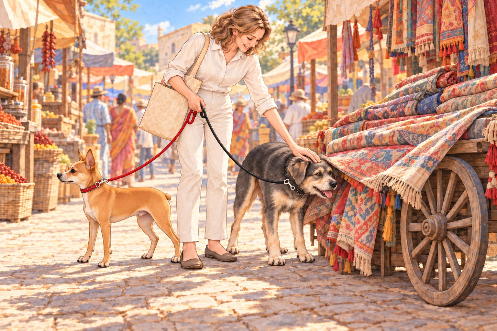
Neet had already selected three treasures. One glittered, one smelled of frying, and one was a discarded paper cup that Heather gently steered him past.
“Empty,” he told Buddy after a final disappointed sniff.
“Some mysteries solve themselves.”
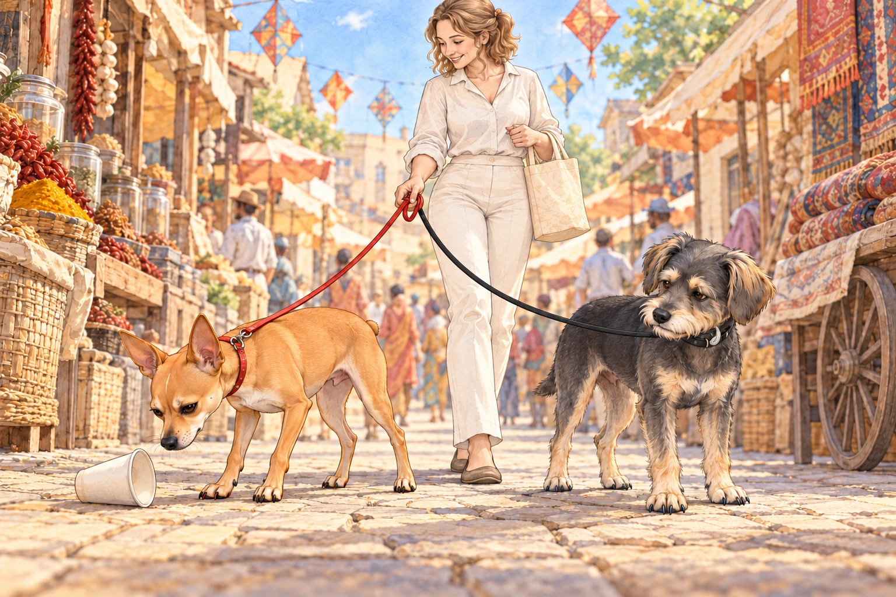
The first stop was a spice stall. Cumin, turmeric and cardamom crowded into the air. Heather picked up a small packet of saffron while Neet inspected the jars with unrestrained enthusiasm.
“This one smells like adventure!” he declared, sneezing as a puff of chili powder tickled his nose. “Buddy, you have to try this!”
He sneezed again, harder. The jars stayed where they were. Neet took a step back and watched them.
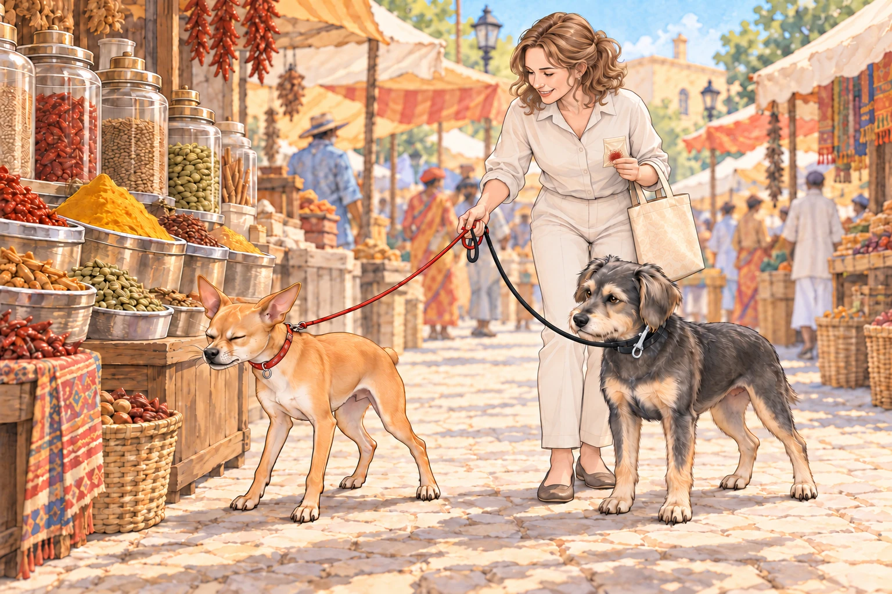
Buddy cautiously approached, but one whiff sent him retreating behind Heather’s legs. “I think I’ll pass.”
“It’s very powerful,” Neet said.
“Yes. You’re losing.”
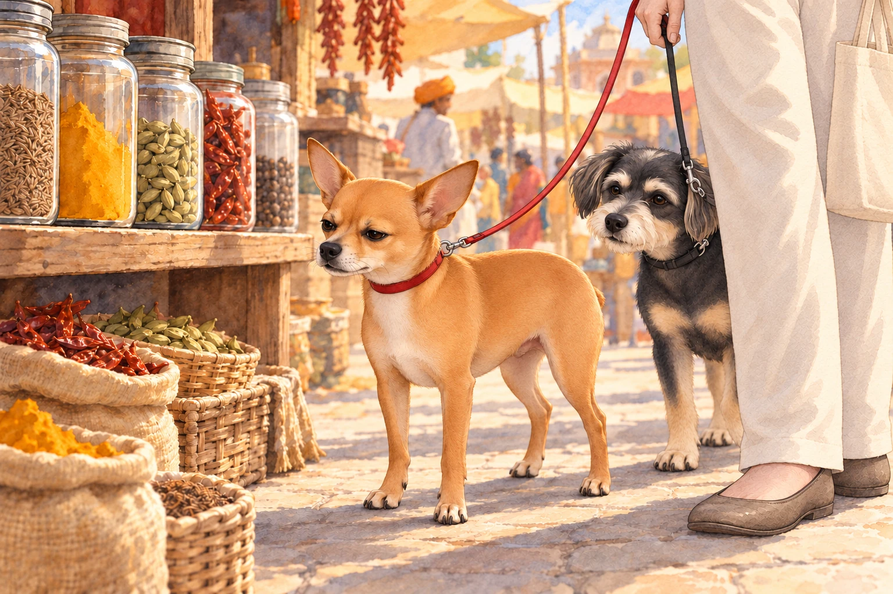
Neet kept his head turned toward the lane. He could inspect the rest of the spices from here.
Heather moved both dogs farther from the counter before paying. The shopkeeper laughed and handed her a small biscuit for them.
“Your little one is brave,” he said, gesturing to Neet. “But this one”—he pointed to Buddy—“has the wisdom to avoid trouble.”
Heather divided the biscuit. Buddy sat up very straight to receive his half.
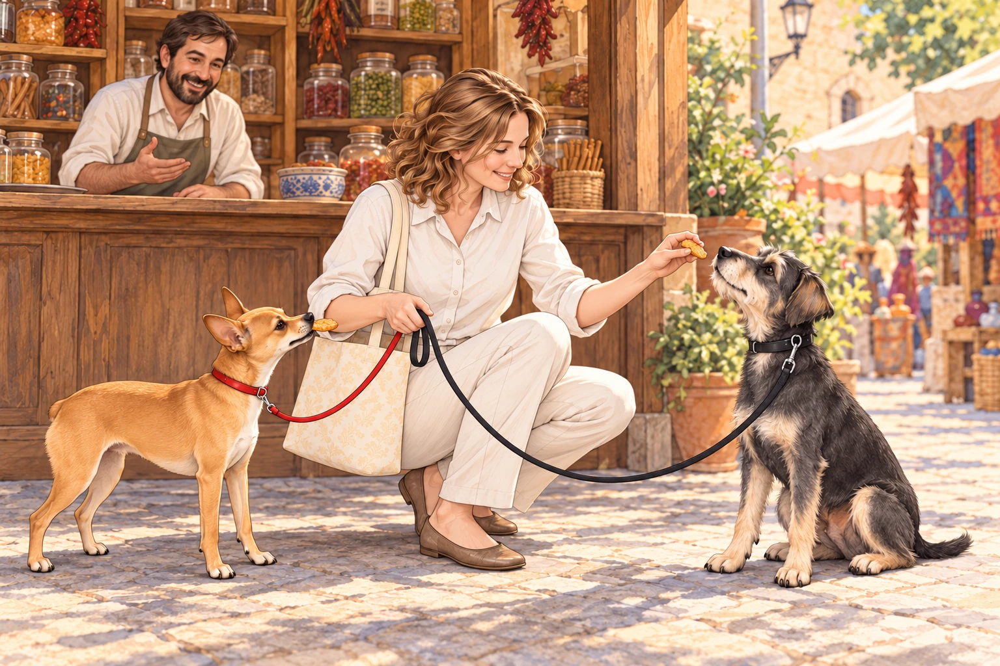
Neet swallowed his. Buddy chewed. Somewhere inside all that cumin there had been a biscuit. This was new information about shopping.
“Perhaps,” Buddy said, “we could inspect a few more places.”
Neet’s ears swung toward him. “For treasure?”
“For biscuits.”
“That’s treasure.”
Buddy licked a crumb from his lip. For once, the definition seemed reasonable.
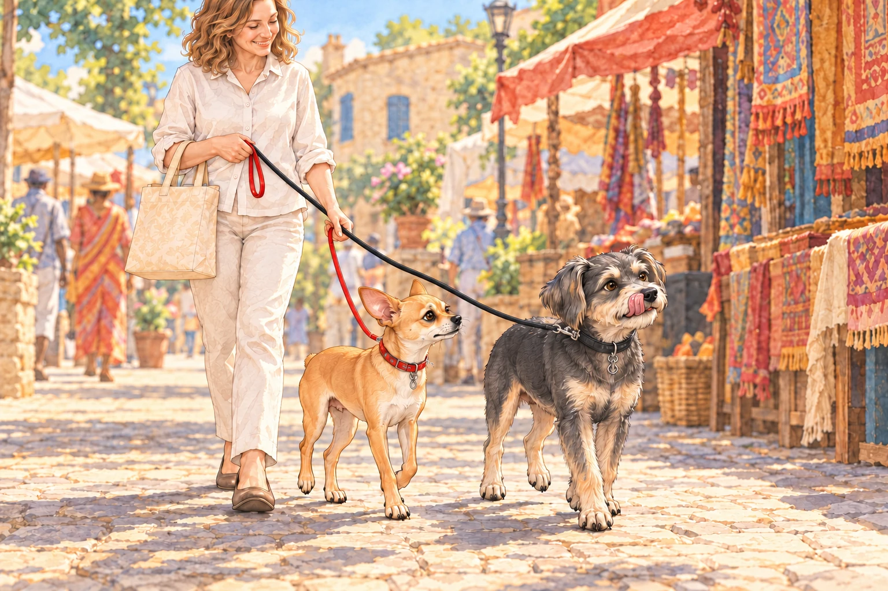
Further down the lane, they reached a jewelry stall glittering with bangles and earrings. Beyond it, a vendor was calling about something freshly fried. Buddy lifted his nose. Neet lifted himself onto a low wooden platform and barked at a dog in a mirror.
“Hey! Who’s that handsome dog? Oh, wait, it’s me!”
His tiny nub moved as he tried a stern expression. The other dog was excellent at those too.
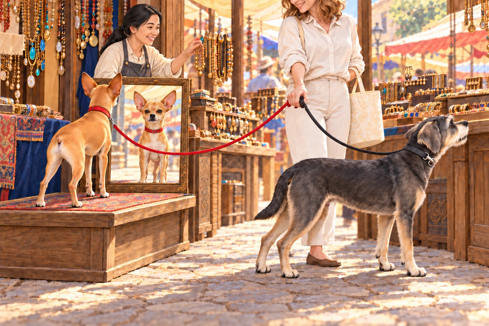
Buddy looked toward the food stall, then back at Heather. She was holding one anklet up to the light. Tiny bells shivered along it. She smiled and asked to see its partner.
This was going to take longer than buying saffron.
“Neet,” Buddy said, “after this, can we inspect the place that smells good?”
“They all smell good.”
“The one without jars.”
Neet thought about this while admiring his ears from a slightly different angle. Then he noticed a bangle that had fallen to the ground.
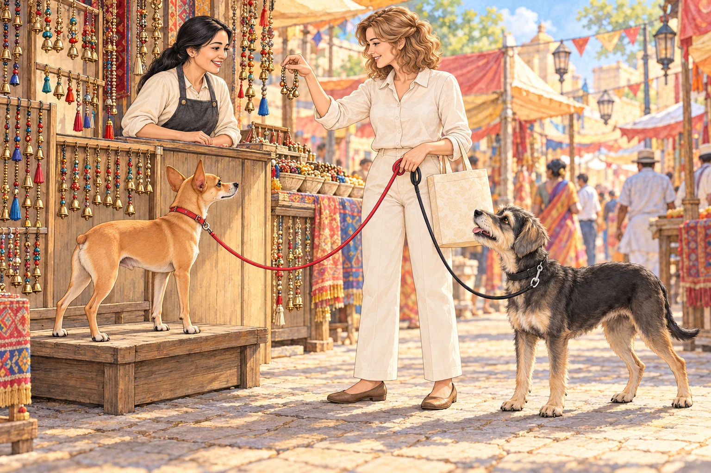
“Buddy, try it on!”
“I don’t think that’s how it works.”
Neet nudged it toward his paw. Buddy lifted the paw just long enough to put it on the other side of the bangle.
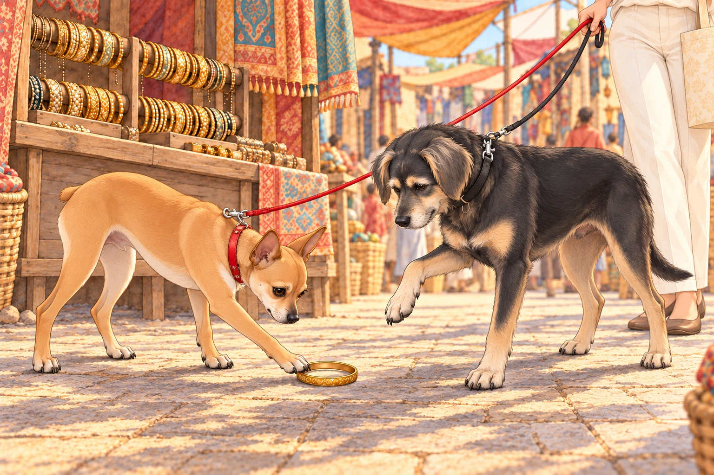
“If you’re finished,” Buddy said, “we can move on.”
“We haven’t found you anything.”
“I’ve found a smell.”
Heather put the matching anklets together. The seller reached for a little box. Buddy saw his chance to help: return the fallen bangle, finish the shopping, reach the smell.
He pushed it toward the platform with his nose.
The bangle rolled farther than he intended, struck a wooden support and spun with a sharp little clatter beneath the mirror.
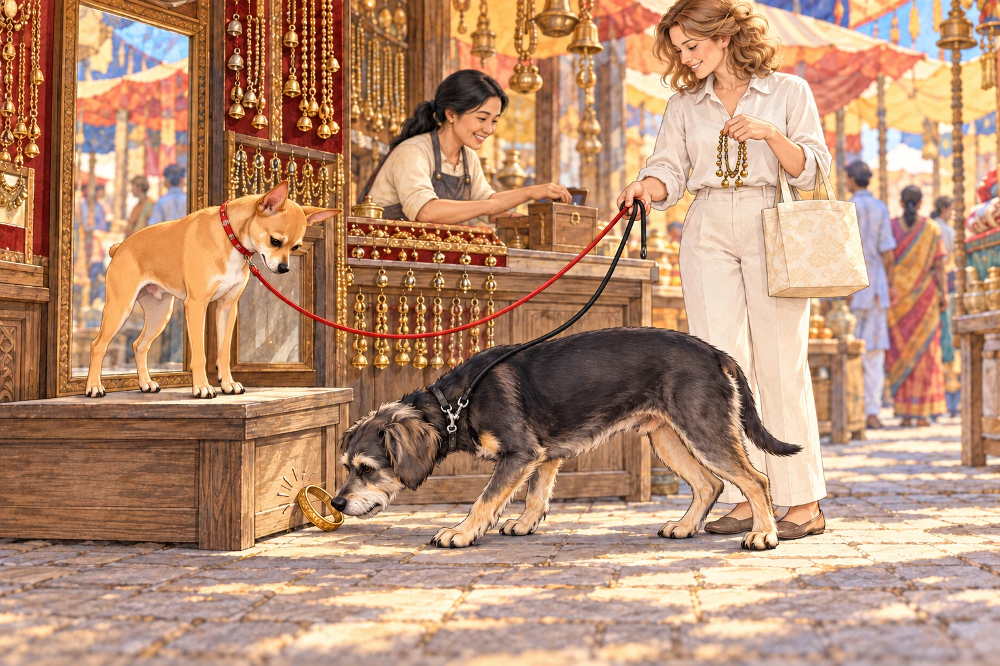
Neet’s handsome companion suddenly had something rattling below his feet. Neet barked a warning. So did the companion.
Buddy put his nose down to stop the bangle. It tilted away from him, rolled another few inches and hit the support again.
“Something’s under him!” Neet announced.
“It’s the thing you wanted on me.”
Neet barked once more at the mirror. Buddy stood over the bangle without touching it. Helping had become quite delicate.
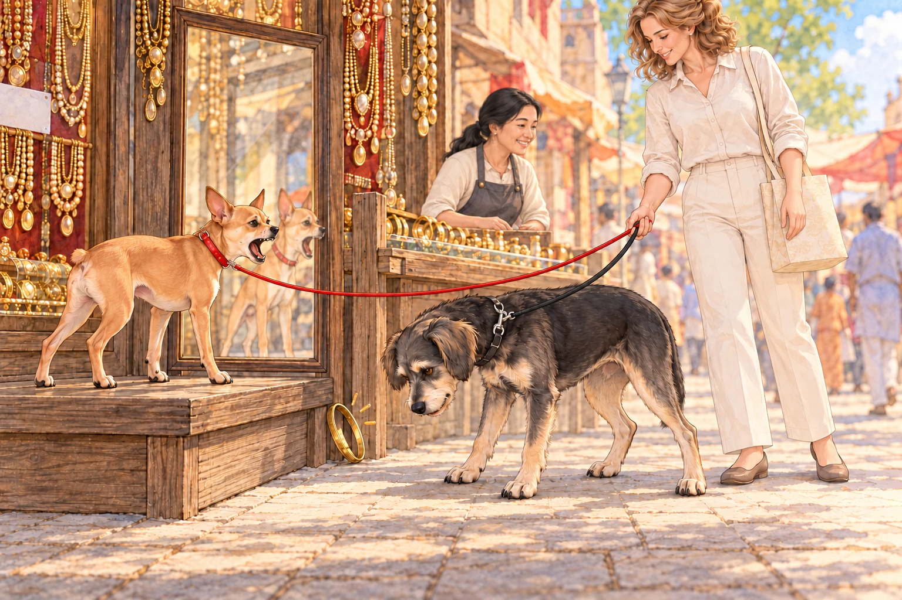
Heather shortened their leashes, bringing Neet off the platform and both dogs beside her. Then she retrieved the bangle and handed it to the seller.
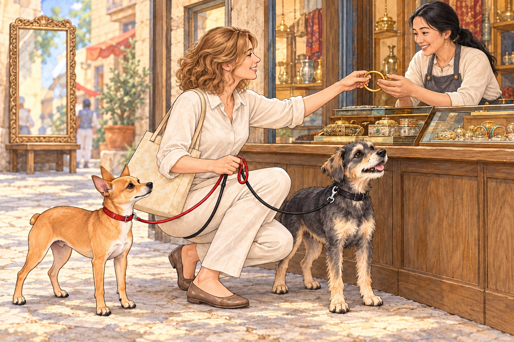
“Sorry. He was being helpful.”
Buddy looked up hopefully.
“I think,” she added.
The seller smiled and set the bangle on the counter. Heather paid for her anklets, tucked the box into her bag and crouched long enough to straighten Buddy’s collar.
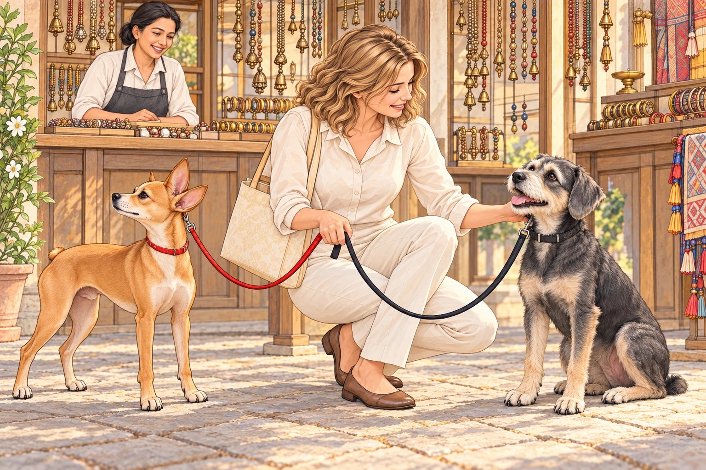
“All right, shoppers. Shall we find something to eat?”
Buddy rose immediately.
Neet glanced back at the mirror. The handsome dog was leaving too. Good. Everyone had received the order.
The food stall sold freshly fried samosas and kachoris. Its vendor boomed over the clatter of plates. Buddy’s nose led him right to it; for the first time that morning, Neet had to hurry to keep up.
“Heather! We need to try this!” Neet barked, hopping on his hind legs.
Buddy sat down beside the shopping bag. At the spice stall, sitting had worked very well.
The vendor leaned over his counter. Neet hopped higher. Buddy straightened his back.
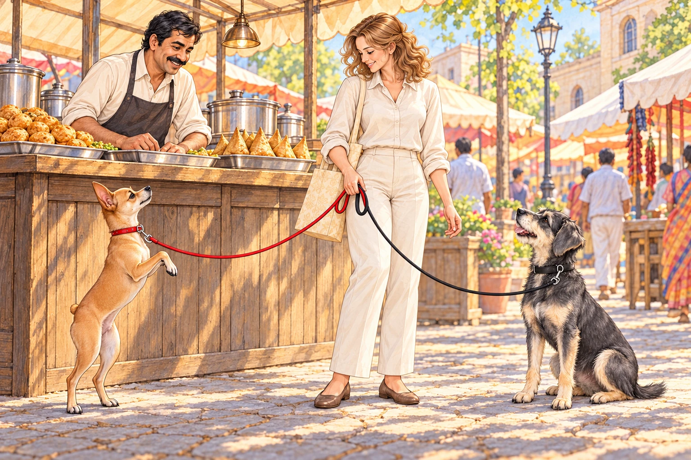
“Two eager customers,” the vendor said.
Buddy’s ears drooped a little. Apparently he and the hopping dog had made the same impression.
Heather bought a small plate of kachoris. She tore off tiny pieces, handing one to each dog. Neet finished his before Buddy had worked through the flaky pastry.
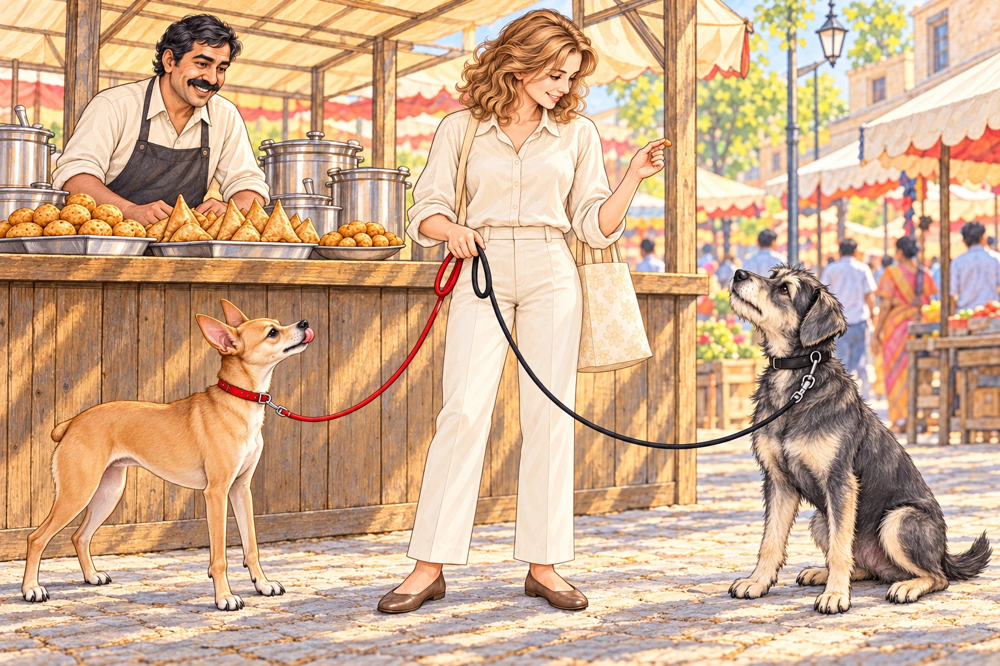
“This might be the best thing I’ve ever tasted. Buddy, isn’t this amazing?”
Buddy finished chewing before he answered. “We could stay here a little longer.”
He had meant to give a restrained opinion. Unfortunately, his nose kept pointing at the plate.
Heather took a step toward the next shop. Buddy stayed seated.
“You wanted a quiet corner,” Neet reminded him.
Buddy glanced at the vendor, who was still booming about his kachoris. “I’ve changed my requirements.”
Heather looked down at him, then back at the stall. “Oh, now we like shopping.”
She moved the bag into the shade beside the counter and finished her kachori while Buddy supervised. Neet stood beside him, watching for any pastry that might need urgent assistance.
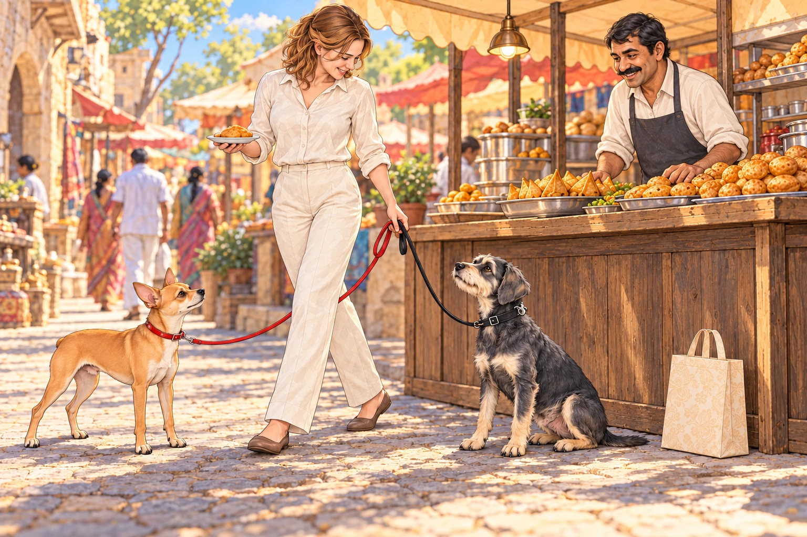
Buddy had earned a pause. He decided to improve it.
“Sit,” he told Neet.
“Why?”
“It shows we’re patient.”
Neet sat. The vendor passed a plate to a woman. Both dogs looked up. He took payment from a man. Both dogs looked up again. He wiped a patch of counter. Neet looked at Buddy.
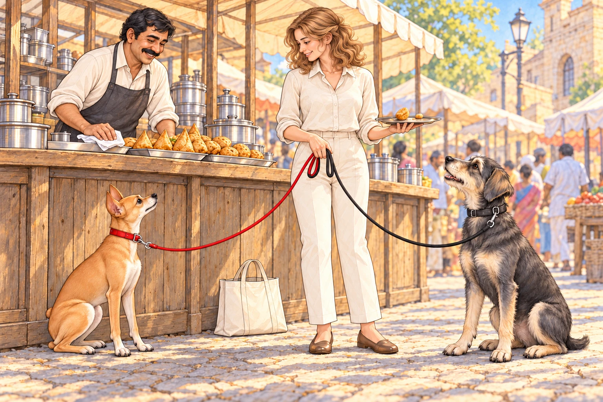
“How patient?”
Buddy had not worked out that part.
Heather noticed their two solemn faces and laughed. “You’ve had your little taste. The rest is mine.”
She took the last bite.
Neet stood up.
Buddy remained seated a moment longer, partly because he was patient and partly because he didn't want Neet to see how quickly the system had failed.
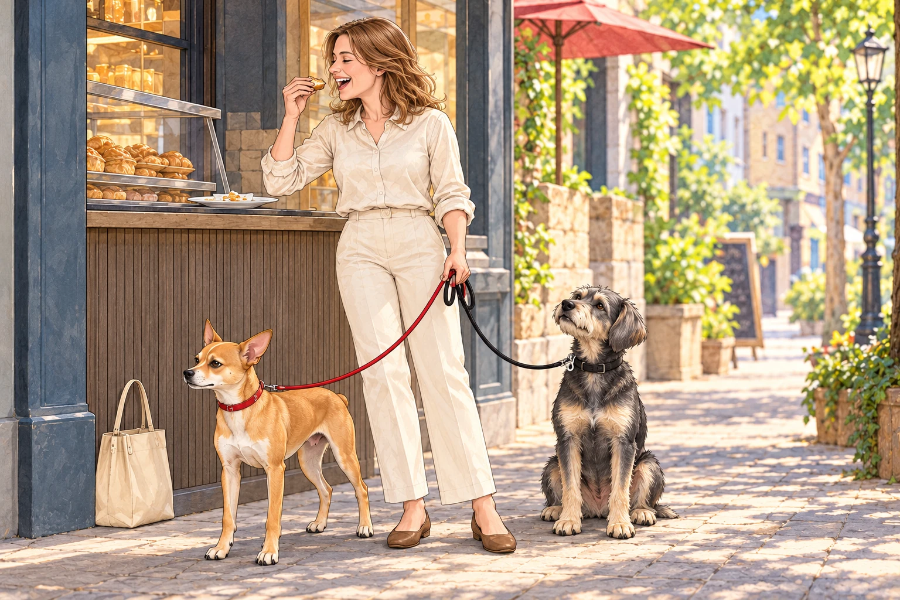
Then Heather asked for a parcel to take back to Meera’s house.
Buddy stood too. Shopping was full of surprises.
As they made their way toward the bazaar entrance, the lanes grew more crowded. Heather shifted the bag on her arm. Buddy walked close enough to catch the warm pastry smell drifting from the paper parcel at the top.
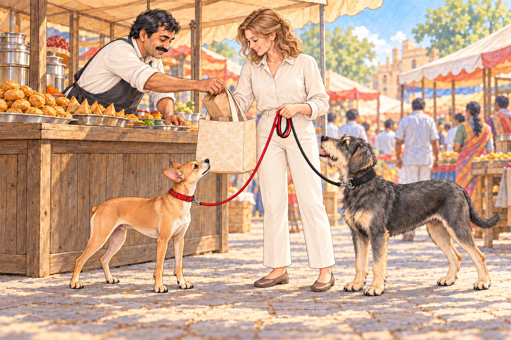
He was very pleased to be carrying nothing and accompanying everything.
Neet stopped at the mouth of a side lane. Something flashed farther along it.
“Another treasure!”
Buddy could hear the food vendor behind them and smell the parcel ahead. He wanted to keep this arrangement exactly as it was.
“We’ve already got treasure,” he said, looking up at the bag.
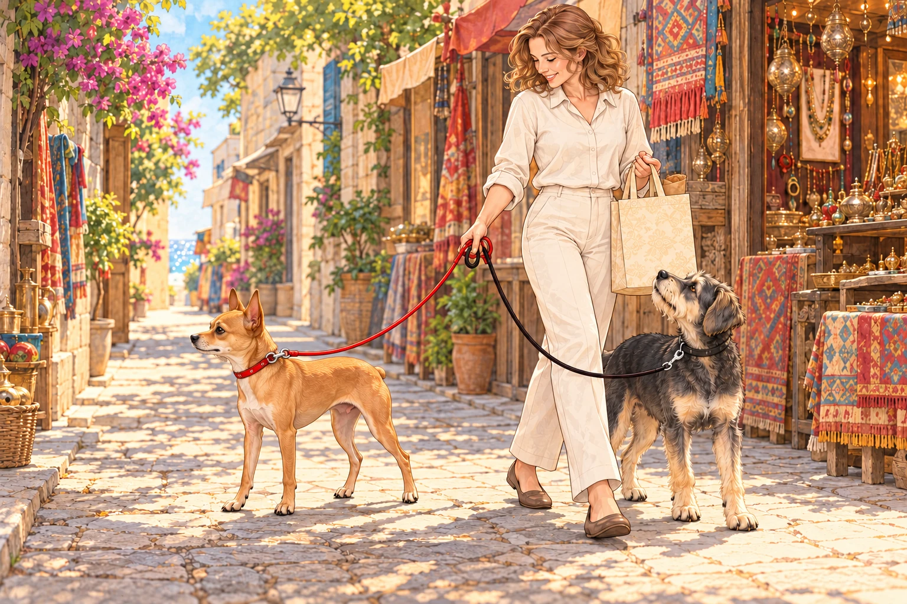
Neet considered it. Heather was turning toward the entrance. He turned with her.
Then a cow wandered lazily into the lane.
“Buddy, look! It’s huge! We have to defend Heather!” Neet barked, puffing out his chest.
Buddy took a step aside, but Heather’s shopping bag was on the other side. He hesitated, nose lifting toward the parcel. Neet pulled forward, and Heather quickly scooped him into her arms before he could approach the cow.
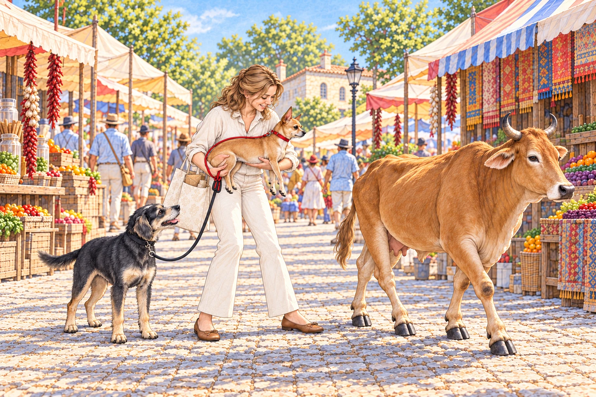
“Relax, Captain Neet. The cow’s not interested in us.”
With Neet supported against her, Heather could no longer step neatly around Buddy. His leash drew gently taut.
Buddy looked at the bag. Then he looked at Heather’s feet.
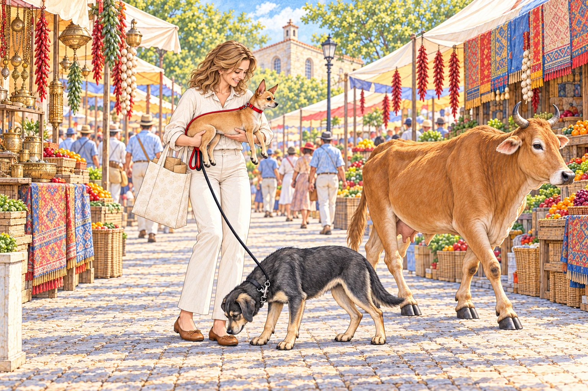
He moved back beside her, away from the cow’s path, leaving room for her to follow. “Let’s leave it some room.”
Heather eased into the space with him and stood against the shopfront. Buddy waited at her ankle. The parcel smelled just as good from here.
The cow passed without looking at Neet. He watched it from Heather’s arms, his chest still puffed out.
“It’s leaving,” he announced.
“So are we,” Buddy said.
Heather shifted Neet to make room for the shopping bag. “My protector. Very portable.”
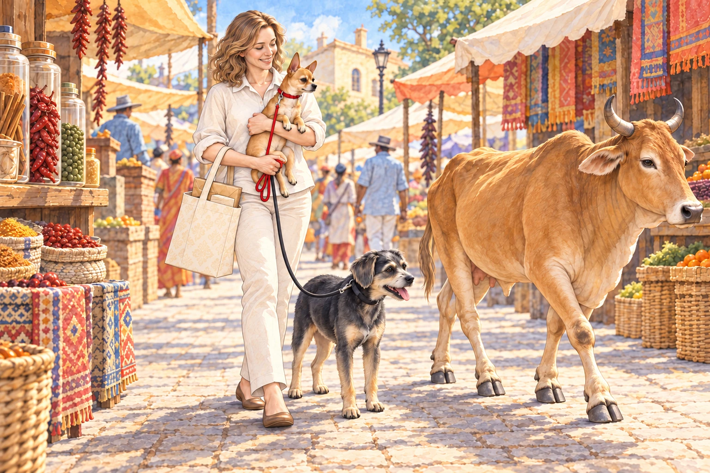
When the lane cleared, she set Neet down and gathered the leashes again. Buddy walked beside him. His shopping plan had included biscuits and pastry, but not this much responsibility for where everyone’s feet went.
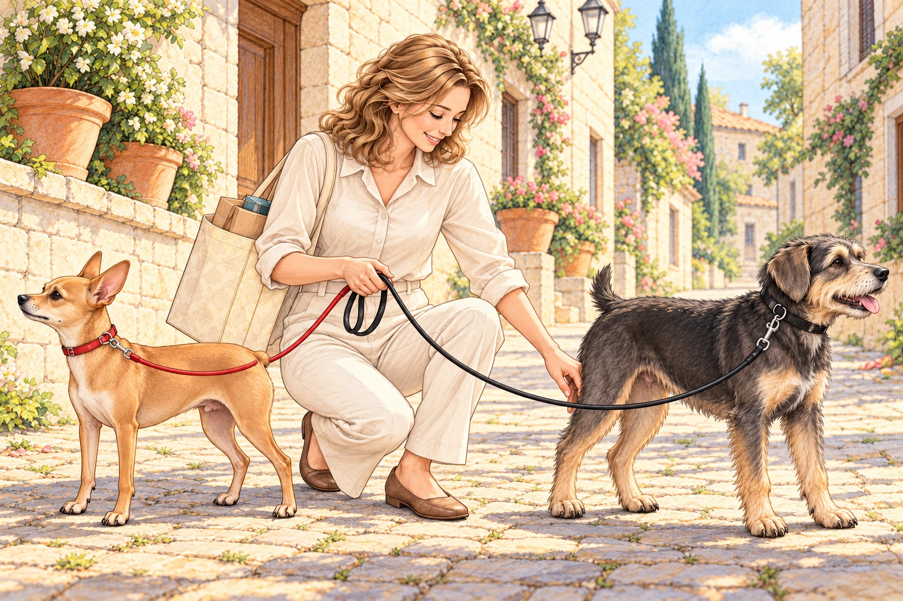
Neet glanced up at the bag.
“You kept the treasure safe.”
Buddy was pleased with that until Neet added, “While I handled the cow.”
He let it pass. They had already let one large thing pass today.
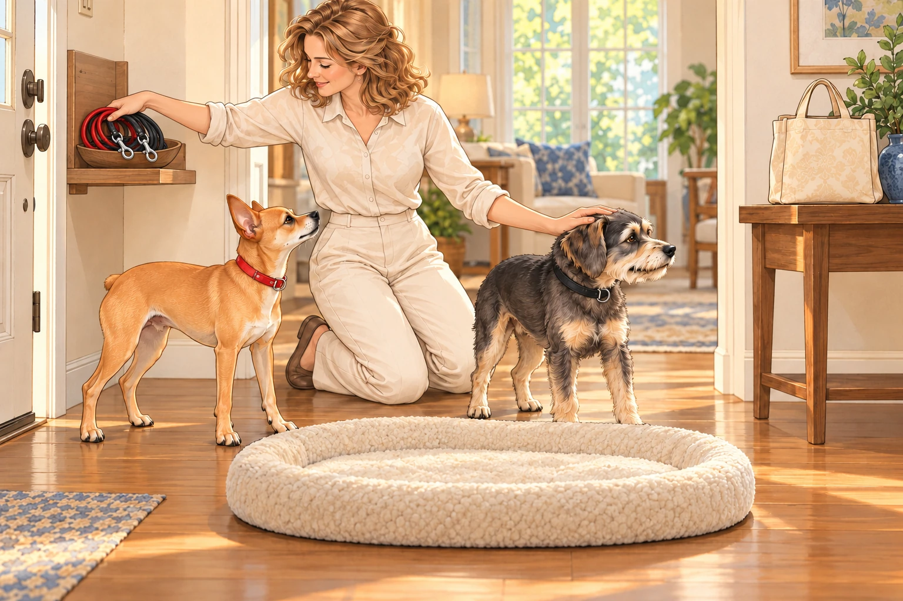
Back at Meera’s house, Heather unpacked their purchases while Neet and Buddy rested on a soft cushion. She put the saffron away, set the food parcel aside and took out her anklets.
Neet’s nub wagged as he recounted their adventure.
“Buddy, today we conquered the bazaar! We sniffed spices, tried treasures, and faced off against a cow!”
Buddy, already half-asleep, mumbled, “You did all the conquering. I just tried to survive.”
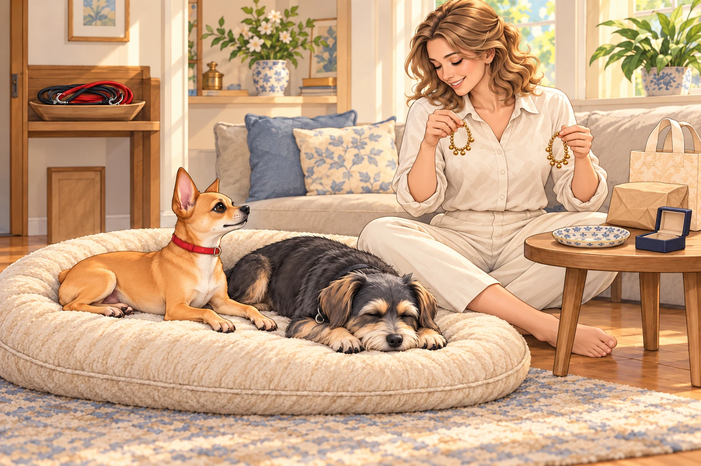
Heather settled beside them, her new anklets chiming. Neet opened one eye at the sound. Buddy kept both of his shut; he had tried on enough jewelry for one day.
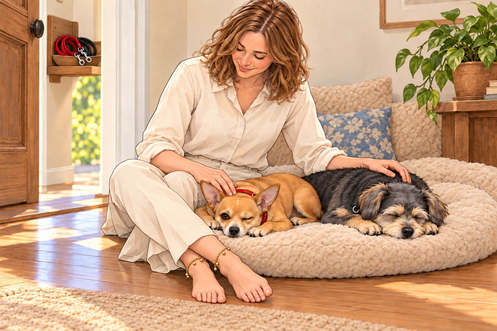